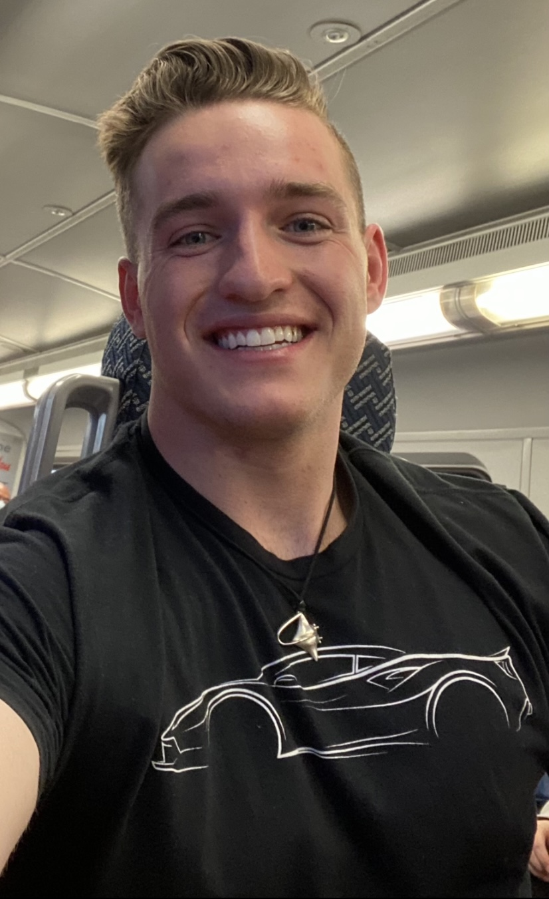

Kylan Van Der Watt is an experinaced, smart, hardworking and dedicated canidate looking to apply.
Education
Kylan has graduated high school with his diploma from American Heritage School. And is currenlty attending a world renound college, Brigham Young University. To learn more about this prestigious college visit Byu.edu
Kylan hopes to get a Masters degree from the buisness school at BYU and to one day start his own company.
Kylan has also completed the course for a CDL (Commercial Drivers Licences) and can drive commercial Vehicles.
Work Experiance
- General Contractor for Bobs Services
- 1.Has a good knowlege of most contacting work including Roofing, Plumbing, Electrition, and Framing
- 2.Has led many diffrent teams and is an experianced leader
- 3.Always completes the job professionally and on time
- Summer Sales Team Leader
- 1.Lead a team of over 25 diffrent guys to become top team in company
- 2.Awarded Saleman of the summer due to personal and team Acheivments
- 3.Most Sales retained out of anyone in the company
- Personal Trainer
- 1.Helped over 100 people reach there fitness and weight loss goals.
- 2.Found a way to incorporate the whole family into fitness diet.
Skills
- Leadership and Unifying a team
- Very Intelectually Bright and Gifted
- One of the best upcoming Problem solvers
- Great at Public Speaking
- Easily relates to others
- Always willing to learn more from others
- Mechanically Inclined
- Can fix most small and large housold problems
If your interested in contacting Kylan please use one of the following conact methods to reach him.
- Phone:801-657-0526
- Email: Kylanvdw27@gmail.com
You can Always expect 5 Star Work from Kylan